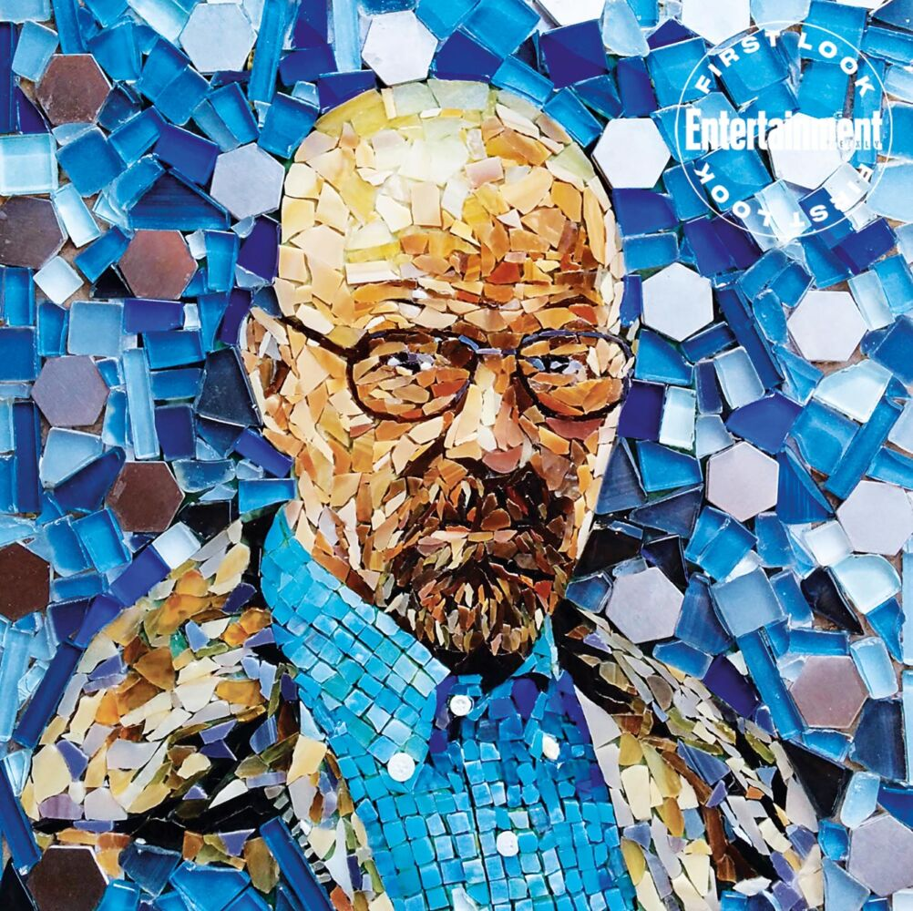

MonalisaO retrato de Mona Lisa propicia a análise de elementos históricos relativos ao Renascimento. Um elemento fundamental para a pintura é o uso de tintas mais sofisticadas como a tinta a óleo, a qual remete à época das relações comerciais entre os europeus e os povos árabes.
AbaporuAbaporu, nome de origem tupi-guarani que significa "homem que come gente", foi o marco inicial do Movimento Antropofágico, que consistia na deglutinação da cultura estrangeira que chegava ao Brasil, adaptando-a para a realidade do país.
Tarsila pintou Abaporu como um presente de aniversário para o seu marido na época, o escritor Oswald de Andrade. Atualmente, esta pintura é a tela brasileira mais valorizada no mercado artístico mundial.

MosaicoO mosaico tem momentos fragmentados, como contam os antigos historiadores. Na Grécia, no séc. VIII a. C., os gregos utilizavam pedras cortadas em cubos para pisos, refinando a técnica no séc. V a.C. Lá foi encontrado também um dos documentos mais antigos relativos à arte do mosaico (meados do século III a. C.).